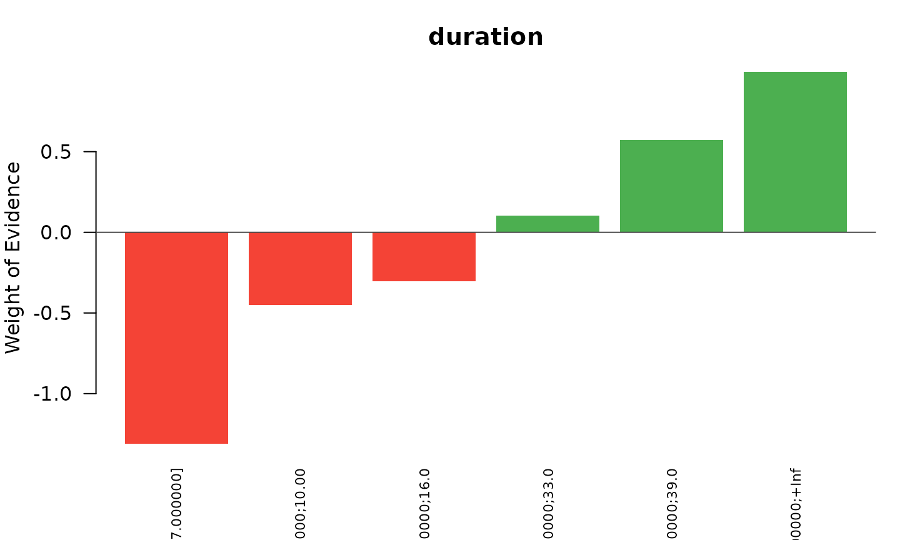
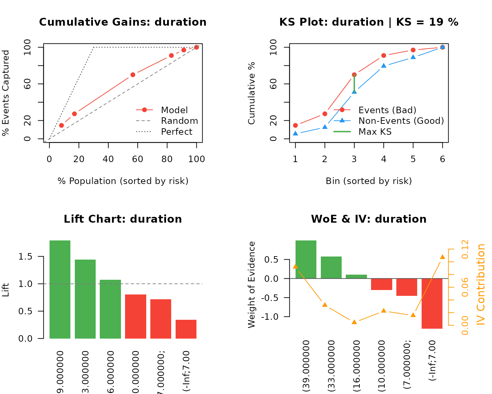

Optimal Binning and Weight of Evidence: A Practical Guide
José Evandeilton Lopes
2026-08-20
Source:vignettes/introduction.Rmd
introduction.RmdThis vignette is the working reference for analysts who bin variables for a living. It covers what the package computes, how to read what it returns, and how to decide what to keep — using a benchmark dataset that ships with the package, so every result below is reproducible with no extra downloads.
The companion vignette, An
Industrial Scorecard Pipeline, takes the same machinery to a wide
production base with out-of-time validation, a recipes
pipeline and deployment artefacts.
Why bin
A scorecard needs predictors that a credit committee, a regulator and a production database can all agree on. Binning buys three things a raw continuous variable does not give you:
- A bounded, monotone transformation. Outliers and skew stop mattering; the relationship with risk becomes a step function you can plot on one page.
- Missing values as first-class citizens. A missing income is a level, not an imputation problem.
- A linear-in-the-logit predictor. After the WoE transform, logistic regression coefficients are directly interpretable and the model is a table.
The cost is resolution: binning discards within-bin variation. The whole craft is choosing cut points that pay for that loss.
The quantities
Weight of Evidence
For bin with events and non-events, out of population totals and :
WoE is the bin log-odds shifted by a constant. Positive means riskier than the portfolio average, negative means safer, and the scale is comparable across variables — which is why WoE, not the raw category, is what enters the model.
Information Value
This is the symmetrised Kullback–Leibler divergence (Jeffreys divergence) between the event and non-event distributions across bins. It is the standard single-number summary of predictive strength, and the package grades it with the bands from Siddiqi (2006):
| IV | Band | Reading |
|---|---|---|
| Unpredictive | drop | |
| Weak | keep only if it adds diversity | |
| Medium | the workhorses of a scorecard | |
| Strong | strong, verify it is not a proxy | |
| Suspicious | almost always leakage |
IV never decreases when you split a bin, so it cannot be used on its own to choose the number of bins — that is what the optimisation algorithms are for.
Monotonicity
Both quantities a scorecard cares about are strictly increasing functions of the bin odds :
So “the event rate is monotone across bins” and “the WoE is monotone across bins” are the same statement, and checking either one suffices. For a numerical variable this is a genuine constraint — the bin order is the interval order. For a nominal variable it is not: the bins can always be relabelled in WoE order, so monotonicity there is free.
The data
The package bundles the Statlog (German Credit) benchmark: 1000 loan applications, 7 numerical and 13 categorical attributes, from the UCI Machine Learning Repository.
german <- read.csv(
gzfile(system.file("extdata", "germancredit.csv.gz",
package = "OptimalBinningWoE")),
stringsAsFactors = FALSE
)
# credit_risk is 1 for a good customer; the event we model is default
german$default <- 1L - german$credit_risk
german$credit_risk <- NULL
dim(german)
#> [1] 1000 21
table(german$default)
#>
#> 0 1
#> 700 300
str(german[, c("duration", "amount", "age", "purpose", "savings")])
#> 'data.frame': 1000 obs. of 5 variables:
#> $ duration: int 6 48 12 42 24 36 24 36 12 30 ...
#> $ amount : int 1169 5951 2096 7882 4870 9055 2835 6948 3059 5234 ...
#> $ age : int 67 22 49 45 53 35 53 35 61 28 ...
#> $ purpose : chr "domestic appliances" "domestic appliances" "retraining" "radio/television" ...
#> $ savings : chr "unknown/no savings account" "... < 100 DM" "... < 100 DM" "... < 100 DM" ...One variable, end to end
obwoe() is the single entry point. Point it at a data
frame and a target and it detects each variable’s type, dispatches the
right algorithm and returns a fitted binning.
fit <- obwoe(german, target = "default", feature = "duration",
min_bins = 3, max_bins = 6)
fit
#> Optimal Binning Weight of Evidence
#> ===================================
#>
#> Target: default ( binary )
#> Features processed: 1
#>
#> Results: 1 successful
#>
#> Top features by IV:
#> duration: IV = 0.2727 (6 bins, jedi)The per-variable result carries everything the transformation needs.
res <- fit$results$duration
data.frame(
bin = res$bin,
count = res$count,
pos = res$count_pos,
rate = round(res$count_pos / res$count, 4),
woe = round(res$woe, 4),
iv = round(res$iv, 4)
)
#> bin count pos rate woe iv
#> 1 (-Inf;7.000000] 87 9 0.1034 -1.3122 0.1068
#> 2 (7.000000;10.000000] 84 18 0.2143 -0.4520 0.0155
#> 3 (10.000000;16.000000] 262 63 0.2405 -0.3029 0.0225
#> 4 (16.000000;33.000000] 397 128 0.3224 0.1046 0.0044
#> 5 (33.000000;39.000000] 88 38 0.4318 0.5729 0.0316
#> 6 (39.000000;+Inf] 82 44 0.5366 0.9939 0.0918Two things to read here. The event rate climbs from 10% to 54% across the bins — longer loans default more, and the ordering never reverses. And the IV column shows where the information sits: the two extreme bins carry 73% of it between them, while the largest bin, holding 40% of the portfolio, contributes almost nothing.
cutpoints is the authoritative boundary vector; bin
labels are for humans.
res$cutpoints
#> [1] 7 10 16 33 39Intervals are half-open on the right, , throughout the package: a loan of exactly 10 months falls in the bin that ends at 10.
plot(fit, type = "woe", feature = "duration")
Reading the gains table
obwoe_gains() turns a fitted binning into the table a
credit analyst actually reviews: cumulative capture, KS, lift.
gains <- obwoe_gains(fit, feature = "duration", sort_by = "woe")
gains
#> Gains Table: duration
#> ==================================================
#>
#> Observations: 1000 | Bins: 6
#> Total IV: 0.2727
#>
#> Performance Metrics:
#> KS Statistic: 19.00%
#> Gini Coefficient: 26.65%
#> AUC: 0.6332
#>
#> bin count pos_rate woe iv cum_pos_pct ks lift
#> (39.000000;+Inf] 82 53.66% 0.9939 0.0918 14.7% 9.2% 1.79
#> (33.000000;39.000000] 88 43.18% 0.5729 0.0316 27.3% 14.8% 1.44
#> (16.000000;33.000000] 397 32.24% 0.1046 0.0044 70.0% 19.0% 1.07
#> (10.000000;16.000000] 262 24.05% -0.3029 0.0225 91.0% 11.6% 0.80
#> (7.000000;10.000000] 84 21.43% -0.4520 0.0155 97.0% 8.1% 0.71
#> (-Inf;7.000000] 87 10.34% -1.3122 0.1068 100.0% 0.0% 0.34The three headline numbers:
- KS is the largest gap between the cumulative event and non-event distributions, . It answers “at the best cut, how much better than random is this variable at separating the two populations”.
- Gini is on the binned score.
- Lift in a bin is its event rate over the portfolio rate — the operational number for a cutoff policy.
op <- par(mfrow = c(2, 2), mar = c(4, 4, 2, 1))
plot(gains, type = "cumulative")
plot(gains, type = "ks")
plot(gains, type = "lift")
plot(gains, type = "woe_iv")
par(op)All variables at once
Drop the feature argument and every column is binned.
Numerical and categorical variables are routed automatically.
model <- obwoe(german, target = "default", min_bins = 2, max_bins = 6)
model
#> Optimal Binning Weight of Evidence
#> ===================================
#>
#> Target: default ( binary )
#> Features processed: 20
#>
#> Results: 20 successful
#>
#> Top features by IV:
#> status: IV = 0.6640 (4 bins, jedi)
#> credit_history: IV = 0.2908 (5 bins, jedi)
#> duration: IV = 0.2727 (6 bins, jedi)
#> savings: IV = 0.1946 (5 bins, jedi)
#> purpose: IV = 0.1667 (6 bins, jedi)
#> ... and 15 more
summary(model)
#> Summary: Optimal Binning Weight of Evidence
#> ============================================
#>
#> Target: default ( binary )
#>
#> Aggregate Statistics:
#> Features: 20 total, 20 successful, 0 errors
#> Total IV: 2.1900
#> Mean IV: 0.1095 (SD: 0.1572)
#> Median IV: 0.0509
#> IV Range: [0.0000, 0.6640]
#> Mean Bins: 3.6
#>
#> IV Classification (Siddiqi, 2006):
#> Unpredictive: 6 features
#> Weak : 8 features
#> Medium : 5 features
#> Suspicious : 1 features
#>
#> Feature Details:
#> feature type n_bins total_iv iv_class
#> status categorical 4 6.640e-01 Suspicious
#> credit_history categorical 5 2.908e-01 Medium
#> duration numerical 6 2.727e-01 Medium
#> savings categorical 5 1.946e-01 Medium
#> purpose categorical 6 1.667e-01 Medium
#> property categorical 4 1.122e-01 Medium
#> age numerical 5 8.868e-02 Weak
#> employment_duration categorical 5 8.606e-02 Weak
#> housing categorical 3 8.298e-02 Weak
#> other_installment_plans categorical 3 5.731e-02 Weak
#> personal_status_sex categorical 4 4.447e-02 Weak
#> foreign_worker categorical 2 4.294e-02 Weak
#> other_debtors categorical 3 3.162e-02 Weak
#> installment_rate numerical 4 2.632e-02 Weak
#> number_credits numerical 2 1.008e-02 Unpredictive
#> job categorical 4 8.724e-03 Unpredictive
#> telephone categorical 2 6.364e-03 Unpredictive
#> present_residence numerical 2 1.841e-03 Unpredictive
#> amount numerical 2 1.552e-03 Unpredictive
#> people_liable numerical 2 4.339e-05 UnpredictiveScreening with obwoe_select()
summary() ranks; obwoe_select() decides. It
applies the two criteria that govern admission in practice — IV strength
and guaranteed ordering — and returns a verdict per variable, with the
reason attached.
sel <- obwoe_select(model)
head(sel[, c("feature", "type", "n_bins", "total_iv", "iv_class",
"ks", "gini", "monotonic", "quality", "selected")], 10)
#> feature type n_bins total_iv iv_class ks gini monotonic
#> <char> <char> <int> <num> <fctr> <num> <num> <lgcl>
#> 1: credit_history categorical 5 0.29323 Medium 0.18048 0.25361 TRUE
#> 2: duration numerical 6 0.27274 Medium 0.19000 0.26647 TRUE
#> 3: savings categorical 5 0.19601 Medium 0.18667 0.19826 FALSE
#> 4: purpose categorical 6 0.16760 Medium 0.17905 0.22114 TRUE
#> 5: property categorical 4 0.11264 Medium 0.11714 0.17066 TRUE
#> 6: age numerical 5 0.08868 Weak 0.13143 0.16225 TRUE
#> 7: employment_duration categorical 5 0.08643 Weak 0.11952 0.16164 TRUE
#> 8: housing categorical 3 0.08329 Weak 0.13286 0.13436 TRUE
#> 9: other_installment_plans categorical 3 0.05761 Weak 0.09619 0.09637 TRUE
#> 10: personal_status_sex categorical 4 0.04467 Weak 0.10000 0.10485 TRUE
#> quality selected
#> <fctr> <lgcl>
#> 1: Good TRUE
#> 2: Excellent TRUE
#> 3: Fair TRUE
#> 4: Excellent TRUE
#> 5: Excellent TRUE
#> 6: Fair TRUE
#> 7: Fair TRUE
#> 8: Fair TRUE
#> 9: Fair TRUE
#> 10: Fair TRUENothing is ever dropped from the output. A base with 500 candidates returns 500 rows, so the automatic verdict can be reviewed rather than trusted.
sel[!sel$selected, c("feature", "total_iv", "iv_class", "reason")]
#> feature total_iv iv_class reason
#> <char> <num> <fctr> <char>
#> 1: status 6.660e-01 Suspicious IV_SUSPICIOUS
#> 2: number_credits 1.008e-02 Unpredictive IV_BELOW_MIN
#> 3: job 8.763e-03 Unpredictive IV_BELOW_MIN
#> 4: telephone 6.378e-03 Unpredictive IV_BELOW_MIN
#> 5: present_residence 1.841e-03 Unpredictive IV_BELOW_MIN
#> 6: amount 1.552e-03 Unpredictive IV_BELOW_MIN
#> 7: people_liable 4.339e-05 Unpredictive IV_BELOW_MINstatus — the checking-account balance — is the strongest
variable in the file and is rejected for it. An IV of 0.67 sits in the
Suspicious band, where single-variable strength is far more
often a symptom of target leakage than of a genuinely dominant
predictor. Raise iv_max to admit it deliberately:
admitted <- obwoe_select(model, iv_max = Inf)
admitted[admitted$feature == "status",
c("feature", "total_iv", "quality", "selected", "reason")]
#> feature total_iv quality selected reason
#> <char> <num> <fctr> <lgcl> <char>
#> 1: status 0.666 Excellent TRUE OKThe policy is configurable end to end. Each rule that fires is
appended to reason, so a variable rejected on two counts
reports both.
strict <- obwoe_select(
model,
iv_min = 0.02, # drop the Unpredictive band
iv_max = 0.50, # drop the Suspicious band
require_monotonic = "numeric", # ordering is intrinsic only for numerics
monotonicity = "strict", # no ties between adjacent bins
min_bin_pct = 0.05, # every bin holds at least 5% of the base
allow_degenerate = FALSE, # no bin without events or without non-events
top_n = 8,
sort_by = "ks"
)
table(strict$reason)
#>
#> IV_BELOW_MIN IV_BELOW_MIN;SMALL_BIN IV_SUSPICIOUS OK
#> 5 1 1 8
#> SMALL_BIN
#> 5The bin-level view
detail = "full" returns one row per variable
and optimised bin, joined to the complete gains table of each.
This is the object to hand to a model validation team.
detail <- obwoe_select(model, detail = "full")
dim(detail)
#> [1] 73 51
detail[detail$feature == "savings",
c("bin", "n_categories", "count", "pos_rate", "woe", "iv", "lift")]
#> bin n_categories count pos_rate woe iv lift
#> <char> <int> <num> <num> <num> <num> <num>
#> 1: ... >= 1000 DM 1 48 0.1250 -1.0986 0.04394 0.4167
#> 2: unknown/no savings account 1 183 0.1749 -0.7042 0.07680 0.5829
#> 3: 500 <= ... < 1000 DM 1 63 0.1746 -0.7061 0.02656 0.5820
#> 4: 100 <= ... < 500 DM 1 103 0.3301 0.1396 0.00206 1.1003
#> 5: ... < 100 DM 1 603 0.3599 0.2714 0.04665 1.1996Choosing an algorithm
The package ships 37 algorithms: 21 numerical, 16 categorical. They differ in what they optimise, not in what they return.
| Family | Algorithms | Optimises |
|---|---|---|
| Information-theoretic |
mdlp, fast_mdlp, dmiv,
ivb
|
entropy or IV gain per split, with an MDL stopping rule |
| Statistical merging |
cm, fetb, mob
|
merges neighbours whose difference fails a or Fisher test |
| Shape-constrained |
ir, mrblp, mblp,
oslp
|
best fit subject to a monotonicity constraint |
| Exact optimisation |
dp, milp, sblp,
bb
|
global optimum of IV under bin-count and size constraints |
| Metaheuristic |
sab, gmb, mba
|
simulated annealing, greedy or agglomerative search |
| Unsupervised |
ewb, kmb, ubsd,
sketch
|
equal width, k-means, standard deviation, streaming quantiles |
Three questions settle the choice in practice.
Does the model face a regulator? Then the WoE
profile must be monotone, and a shape-constrained method
(ir, mrblp, mblp) or
mob earns its keep. ir runs the Pool Adjacent
Violators algorithm and merges the bins it pools, so the bins it returns
are monotone in their own observed event rate.
Is the relationship expected to be non-monotone?
Utilisation and age often are U-shaped. Use an information-theoretic
method (mdlp, dmiv) or jedi and
let the data pick the shape.
How large is the base? sketch is
designed for streaming and very large
;
the exact optimisers (milp, bb) are the most
expensive and are best kept for a shortlist.
algos <- obwoe_algorithms()
table(numerical = algos$numerical, categorical = algos$categorical)
#> categorical
#> numerical FALSE TRUE
#> FALSE 0 7
#> TRUE 12 9A comparison run costs a few lines. Here five methods on
amount, a variable with no clean monotone relationship:
compare <- function(alg) {
f <- obwoe(german, target = "default", feature = "amount",
algorithm = alg, min_bins = 2, max_bins = 6)
s <- obwoe_select(f, require_monotonic = "none")
data.frame(algorithm = alg, n_bins = s$n_bins, iv = round(s$total_iv, 4),
ks = round(s$ks, 4), monotonic = s$monotonic)
}
do.call(rbind, lapply(c("jedi", "mdlp", "mob", "ir", "dp"), compare))
#> algorithm n_bins iv ks monotonic
#> 1 jedi 2 0.0016 0.0162 TRUE
#> 2 mdlp 5 0.1164 0.1443 TRUE
#> 3 mob 2 0.0046 0.0143 TRUE
#> 4 ir 3 0.0934 0.1152 TRUE
#> 5 dp 4 0.1142 0.1443 TRUEamount is a hard case, and the spread is the point.
mdlp and dp find a non-trivial partition worth
IV ≈ 0.11; jedi and mob stop at
two bins and find almost nothing. ir lands in between at
three bins: enforcing monotonicity on a variable whose empirical rate
violates it can only be done by pooling, so the shape constraint is paid
for in resolution. Running four or five algorithms on the awkward
variables and reading this table is cheap and usually decisive.
Applying the transformation
obwoe_apply() scores a data frame with a fitted binning.
It is the function to use on a validation sample, on a scoring run, or
on next month’s file.
scored <- obwoe_apply(german, model, keep_original = FALSE)
head(scored[, c("default", "duration_bin", "duration_woe",
"purpose_bin", "purpose_woe")], 4)
#> default duration_bin duration_woe purpose_bin purpose_woe
#> 1 0 (-Inf;7.000000] -1.3122 domestic appliances -0.41020
#> 2 1 (39.000000;+Inf] 0.9939 domestic appliances -0.41020
#> 3 0 (10.000000;16.000000] -0.3029 furniture/equipment%;%retraining 0.58243
#> 4 0 (39.000000;+Inf] 0.9939 radio/television 0.09435Values outside the training range fall into the extreme bins;
categories never seen during training and NA receive
na_woe, which defaults to 0 — the neutral value, since
means “portfolio average”.
two <- obwoe(german, target = "default",
feature = c("duration", "purpose"), max_bins = 6)
new_data <- data.frame(
duration = c(4, 10, 200, NA),
purpose = c("car (new)", "unseen category", "education", NA)
)
obwoe_apply(new_data, two, keep_original = TRUE)
#> duration duration_bin duration_woe purpose purpose_bin
#> 1 4 (-Inf;7.000000] -1.3122 car (new) car (new)
#> 2 10 (7.000000;10.000000] -0.4520 unseen category <NA>
#> 3 200 (39.000000;+Inf] 0.9939 education others%;%repairs%;%education
#> 4 NA <NA> 0.0000 <NA> <NA>
#> purpose_woe
#> 1 0.3575
#> 2 0.0000
#> 3 0.2315
#> 4 0.0000A WoE-transformed frame is exactly what a logistic regression wants:
keep <- sel$feature[sel$selected]
woe_cols <- paste0(keep, "_woe")
train <- scored[, c("default", woe_cols)]
glm_fit <- glm(default ~ ., data = train, family = binomial())
round(head(coef(summary(glm_fit)), 6), 4)
#> Estimate Std. Error z value Pr(>|z|)
#> (Intercept) -0.8522 0.0802 -10.630 0.000
#> credit_history_woe 0.8408 0.1520 5.532 0.000
#> duration_woe 0.9435 0.1661 5.682 0.000
#> savings_woe 0.9785 0.1917 5.104 0.000
#> purpose_woe 1.0711 0.1993 5.373 0.000
#> property_woe 0.5125 0.2715 1.888 0.059Coefficients on WoE predictors should all come out positive: a WoE of means one log-odds more risk, so a negative coefficient signals a variable fighting the rest of the model, usually through correlation.
Exporting to SQL
obwoe_sql() writes the same transformation as SQL, so
the scoring can run in the warehouse instead of in R.
obwoe_sql(
model,
table = "risk.applications",
features = c("duration", "purpose"),
keep_columns = "application_id",
dialect = "postgres"
)
#> -- ---------------------------------------------------------------
#> -- Weight of Evidence transformation
#> -- Generated by OptimalBinningWoE 1.13.1
#> -- Algorithm(s): jedi
#> -- Dialect: postgres
#> -- Interval convention: (lower, upper] -- upper bound inclusive
#> -- Variables: 2
#> --
#> -- Variable Type Bins IV
#> -- duration numerical 6 0.27274
#> -- purpose categorical 6 0.16671
#> -- ---------------------------------------------------------------
#> SELECT
#> application_id,
#> CASE
#> WHEN duration IS NULL THEN 0
#> WHEN duration <= 7 THEN -1.3121863889661687
#> WHEN duration > 7 AND duration <= 10 THEN -0.45198512374305744
#> WHEN duration > 10 AND duration <= 16 THEN -0.3028722379457563
#> WHEN duration > 16 AND duration <= 33 THEN 0.10461674470498177
#> WHEN duration > 33 AND duration <= 39 THEN 0.5728610146854435
#> WHEN duration > 39 THEN 0.993901334579079
#> ELSE 0
#> END AS duration_woe,
#> CASE
#> WHEN purpose IS NULL THEN 0
#> WHEN purpose IN ('business', 'car (used)') THEN -0.8019940993019
#> WHEN purpose = 'domestic appliances' THEN -0.4102018501730504
#> WHEN purpose = 'radio/television' THEN 0.09434664779110719
#> WHEN purpose IN ('others', 'repairs', 'education') THEN 0.23148312351021103
#> WHEN purpose = 'car (new)' THEN 0.357522329106064
#> WHEN purpose IN ('furniture/equipment', 'retraining') THEN 0.5824252658391619
#> ELSE 0
#> END AS purpose_woe
#> FROM risk.applications;Points worth knowing: the intervals reproduce
obwoe_apply() exactly, cut points are written as the
shortest decimal that parses back to the identical double,
and every expression opens with an explicit IS NULL branch
— because in SQL NULL <= 5 is NULL, not
FALSE, and a missing value would otherwise fall through to
ELSE. Fourteen dialects are supported, along with
style = "view", "cte" and
"case".
obwoe_sql(model, features = "age", style = "case", comment = FALSE)
#> -- age_woe
#> CASE
#> WHEN age IS NULL THEN 0
#> WHEN age <= 24 THEN 0.4808349100823084
#> WHEN age > 24 AND age <= 26 THEN 0.2833624113072646
#> WHEN age > 26 AND age <= 29 THEN 0.13116116160255956
#> WHEN age > 29 AND age <= 34 THEN 0.05061000088641792
#> WHEN age > 34 THEN -0.3112125698619751
#> ELSE 0
#> ENDPreprocessing
ob_preprocess() handles the two pathologies that break
binning before it starts: missing values and extreme outliers.
set.seed(2024)
messy <- c(rnorm(800, 5000, 2000), rep(NA, 100), runif(100, -1e4, 5e4))
y <- rbinom(1000, 1, 0.3)
prep <- ob_preprocess(
feature = messy,
target = y,
outlier_method = "iqr",
outlier_process = TRUE,
preprocess = "both"
)
prep$report
#> variable_type missing_count outlier_count
#> 1 numeric 100 73
#> original_stats
#> 1 { min: -8995.151324, Q1: 3697.784305, median: 5113.928039, mean: 6625.179803, Q3: 6705.149551, max: 49477.654407 }
#> preprocessed_stats
#> 1 { min: -2161.216958, Q1: 3042.732437, median: 4792.608602, mean: 4703.116058, Q3: 6517.601547, max: 11703.913644 }The cleaned vector is in
prep$preprocess$feature_preprocessed and goes straight into
obwoe(). Missing values become a sentinel that the binner
keeps as its own bin, so the information in “this field was blank” is
preserved rather than imputed away.
Where to go next
-
An Industrial Scorecard
Pipeline — a wide base, out-of-time validation,
recipesandstep_obwoe(), scorecard points, stability monitoring and deployment. -
?obwoefor the fitting interface,?obwoe_selectfor the screening rules,?obwoe_sqlfor the SQL contract,?obwoe_gainsfor the gains table definitions.
References
Siddiqi, N. (2006). Credit Risk Scorecards: Developing and Implementing Intelligent Credit Scoring. John Wiley & Sons.
Thomas, L. C., Edelman, D. B., & Crook, J. N. (2002). Credit Scoring and Its Applications. SIAM.
Navas-Palencia, G. (2020). Optimal binning: mathematical programming formulation. arXiv:2001.08025.
Fayyad, U. M., & Irani, K. B. (1993). Multi-interval discretization of continuous-valued attributes for classification learning. IJCAI.
Hofmann, H. (1994). Statlog (German Credit Data). UCI Machine Learning Repository.
sessionInfo()
#> R version 4.6.1 (2026-06-24)
#> Platform: x86_64-pc-linux-gnu
#> Running under: Ubuntu 24.04.4 LTS
#>
#> Matrix products: default
#> BLAS: /usr/lib/x86_64-linux-gnu/openblas-pthread/libblas.so.3
#> LAPACK: /usr/lib/x86_64-linux-gnu/openblas-pthread/libopenblasp-r0.3.26.so; LAPACK version 3.12.0
#>
#> locale:
#> [1] LC_CTYPE=C.UTF-8 LC_NUMERIC=C LC_TIME=C.UTF-8 LC_COLLATE=C.UTF-8
#> [5] LC_MONETARY=C.UTF-8 LC_MESSAGES=C.UTF-8 LC_PAPER=C.UTF-8 LC_NAME=C
#> [9] LC_ADDRESS=C LC_TELEPHONE=C LC_MEASUREMENT=C.UTF-8 LC_IDENTIFICATION=C
#>
#> time zone: UTC
#> tzcode source: system (glibc)
#>
#> attached base packages:
#> [1] stats graphics grDevices utils datasets methods base
#>
#> other attached packages:
#> [1] OptimalBinningWoE_1.13.1
#>
#> loaded via a namespace (and not attached):
#> [1] future_1.75.0 sass_0.4.10 generics_0.1.4 class_7.3-23
#> [5] lattice_0.22-9 DiceDesign_1.10 listenv_1.0.0 digest_0.6.39
#> [9] magrittr_2.0.5 timechange_0.4.0 evaluate_1.0.5 grid_4.6.1
#> [13] RColorBrewer_1.1-3 fastmap_1.2.0 jsonlite_2.0.0 Matrix_1.7-5
#> [17] nnet_7.3-20 survival_3.8-6 purrr_1.2.2 scales_1.4.0
#> [21] codetools_0.2-20 textshaping_1.0.5 jquerylib_0.1.4 lava_1.9.2
#> [25] cli_3.6.6 rlang_1.3.0 hardhat_1.4.3 parallelly_1.48.0
#> [29] future.apply_1.20.2 splines_4.6.1 withr_3.0.3 cachem_1.1.0
#> [33] dials_1.4.4 yaml_2.3.12 prodlim_2026.03.11 otel_0.2.0
#> [37] parallel_4.6.1 tools_4.6.1 dplyr_1.2.1 recipes_1.3.3
#> [41] globals_0.19.1 vctrs_0.7.3 R6_2.6.1 rpart_4.1.27
#> [45] lubridate_1.9.5 lifecycle_1.0.5 fs_2.1.0 MASS_7.3-65
#> [49] ragg_1.5.2 pkgconfig_2.0.3 desc_1.4.3 pkgdown_2.2.1
#> [53] pillar_1.11.1 bslib_0.12.0 data.table_1.18.4 glue_1.8.1
#> [57] Rcpp_1.1.2 systemfonts_1.3.2 xfun_0.60 tibble_3.3.1
#> [61] tidyselect_1.2.1 knitr_1.51 farver_2.1.2 htmltools_0.5.9
#> [65] rmarkdown_2.31 ipred_0.9-15 timeDate_4052.112 gower_1.0.2
#> [69] compiler_4.6.1